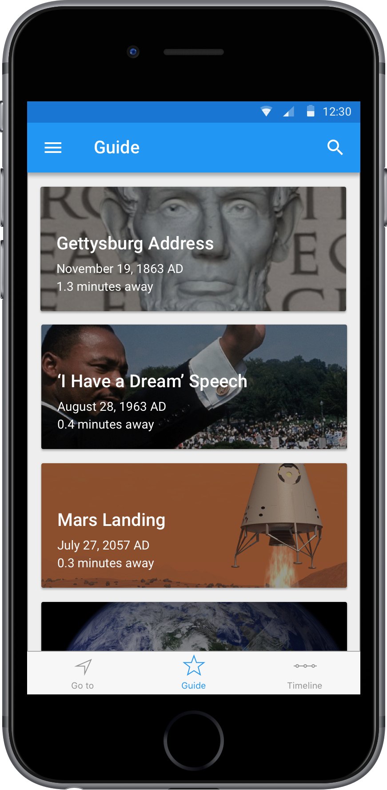
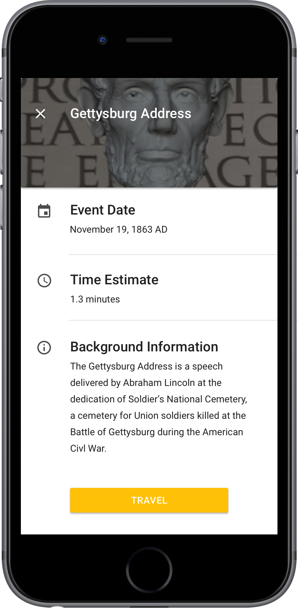
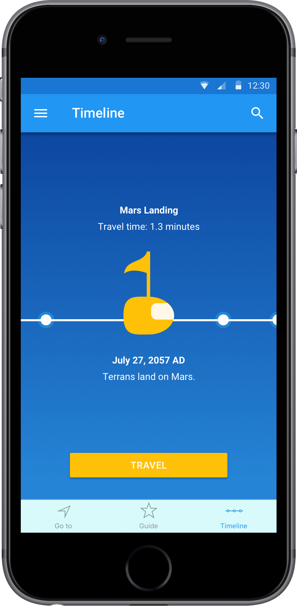
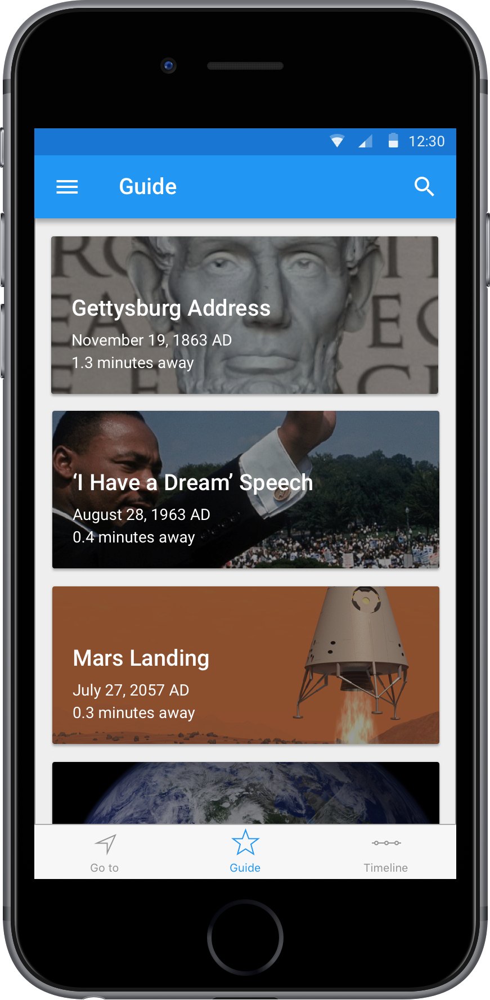
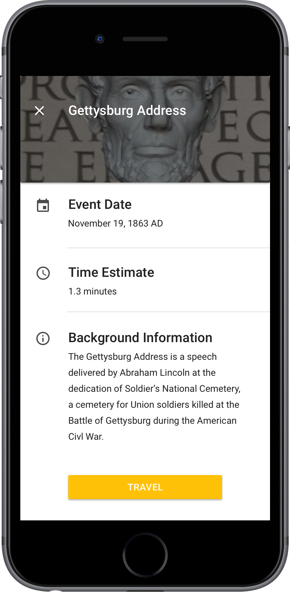
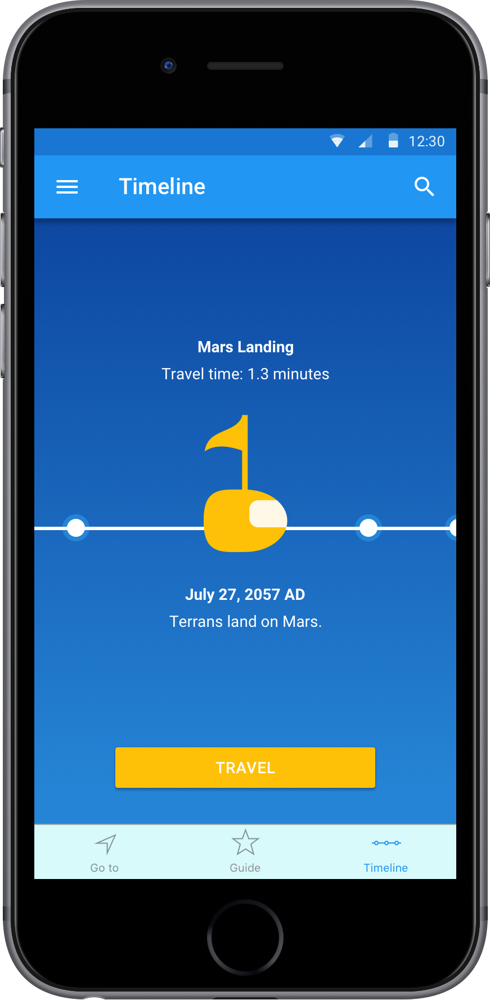

Chronopod Project Overview
Chronopod is a time travel app that I created as a design exercise. The rules for the design prompt were left open to interpretation, so I did everything from creating product constraints to research, wireframing, and visual design.
Please note: Due to the time constraint on this project, all the work you see below had to be completed within 72 hours.
Research
My design process always starts with some form of research. For this project, I started by looking up some pop culture examples of time travel over the years. This part was particularly time-consuming because I got lost in all of the awesome, creative ways that other designers have imagined time travel. After that, I created a mood board with interesting designs that could inspire the look and feel of the app. Last but not least, this challenge gave me a good excuse to go to NASA, where I did some research on pod-like experiences and astronauts living in small spaces.
Constraints
Before you view the Chronopod app concept, I want to make sure that I inform you of a number of constraints that I created for myself while designing the app. I took a slightly more realistic approach (no teleportation, for example) because I felt that by doing so, I was able to create a unique world to design for. Furthermore, I was inspired to establish more realistic constraints after reading about Einstein's theory of relativity, which made it sound like if we discover time travel one day, we will begin by following an algorithm with limitations as opposed to magically discovering teleportation. Before I get too deep into the rabbit hole of time travel theories, here are the constraints that I established:
- No teleportation. Users must physically travel through time (takes time to time travel: 0.5 seconds per year).
- Users may not travel infinitely into the future or past due to constraint #1.
- Users must enter a specially manufactured hover pod to initiate time travel (for safety reasons, of course).
- After users reach their time travel destination, they can exit the pod to explore, but can only watch events transpire. Nothing can be altered.
User Persona
I designed this app thinking that NASA would use it as an educational tool to encourage people to explore NASA-inspired events such as humans first landing on Mars or even events such as The Gettysburg Address. Therefore, I wanted to make sure I designed an experience that all humans could enjoy and use. Time travel should be for everyone!
Wireframes and Mockups
Below are some wireframes and mockups of the app. I highly encourage checking out the links to the PDF versions for the full workflow and notes that reveal some of the thoughts behind my design decisions.
 





If I had more time...
This design exercise was so awesome and blue sky that I had too many ideas! If I had more time, here are some of the things I'd go back and design:
- Users can time travel to view personal events through some science-y way (perhaps DNA?) to view events such as the history of their ancestors as well as see the ability to see into the future, which changes every time they go back to the present and make changes/decisions in their lives.
- Design the hover pod experience more. I originally planned on designing a panoramic projection on the walls and ceiling of the pod that would display different pod themes. Kind of like a relaxing IMAX experience and even a bed or couch for you to take a nap in while you travel.
- More details on what happens when the user arrives at their location and leaves the pod.
- Group travel. What would the experience look like if you time traveled with your friends?